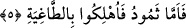

şiddetini daha net belirtme maksadıyladır. Çünkü “karia” kelimesinde, “hâkka”
kelimesinde olmayan bir anlatım ve vurgulama gücü vardır. Konuyu biraz daha açmak
gerekirse Arapçada, “karia” kelimesinin çoğulu kullanılarak “esâbethum kavâriu’d-
dehr” denilir ki anlamı “zamanın korkunç olayları ve şiddetleri o insanların başlarına
geldi” demektir. Kelime içindeki “vurma” anlamı, bu örnek cümlede kendini
göstermektedir. Bir başka misâl: Cinlerden ve insanlardan duyulan korku esnâsında
okunduğu için Kur’an âyetlerine “kavâriu’l-Kur’an” denilmektedir. Bu âyetlere söz
konusu ismin verilmesi, Allah’ın azametinin zikri ile mü’minlerin kalplerine vurarak,
sâdece Cenab-ı Hakk’ın rahmetinden ve himâyesinden meded dilemelerini, dikkatlerini
o yöne yönlendirmelerini sağlamaktır. Bunlar; âyete’l-kürsi ve benzeri âyetlerdir.
Tefsirini yaptığımız bu âyet-i kerîme aynı zamanda Mekke kâfirlerinin kalplerine
öldükten sonra dirilmeyi ve mahşere gelmeyi yalan saydıkları için korku salmaktadır.
5. Semûd’a gelince: Onlar pek zorlu (bir sarsıntı) ile helâk edildiler.
“Semûd’a gelince:” Semûd kavmi arap idiler. Yerleşim merkezleri Şam ile Hicaz
arasındaki Hicr denilen mevki idi. Şam’dan hacca gidenler, gidip-gelirken orasını
görürler. “Onlar pek zorlu (bir sarsıntı)” şiddet açısından diğer bütün çığlıkların
sınırını aşan “korkunç bir sesle helâk edildiler.” Yâni dinî gerçekleri yalan saydıkları
için Allah onları helâk etti. Burada helâk edilme işlemi ifâde edilirken “kimin helâk
ettiği” değil sâdece “helâk edilme olayı” vurgulanmıştır. Çünkü âyetin sevkinden
maksad; onları kimin helâk ettiği; yâni fâil değildir; zira onları helâk eden fâil bellidir.
Kendilerini helâk eden ses -yukarda işâret olunduğu üzere- şiddet açısından diğer bütün
seslerden daha fazla, daha korkunç idi. Öyle ki, bu sesin ardından yeryüzü sarsıldı ve
herkesin kalbi korkudan tir tir titredi. Bu açıklama ile birlikte: “Bunun üzerine onları
o (gürültülü) sarsıntı yakaladı da yurtlarında diz üstü dona kaldılar” (el-A’raf,
7/78) âyet-i kerîmesi ile, “onları da sabaha çıkarlarken o korkunç ses yakaladı” (el-
Hicr, 15/83) âyet-i kerîmesi arasında varmış gibi gözüken çelişki ortadan kalkmaktadır.
Zira her iki âyet-i kerîme de aynı hâdiseden bahsetmektedir.
Tefsirini yaptığımız bu âyet-i kerîme ile hakîkî ilimlerden nasîbini almayıp sadece
zâhir ilmiyle yetinen kimselere işâret edilmektedir. Çünkü onlar “az” bir şeyin bilgisine
sâhiptirler. Tıpkı Semûd kavminin “az bir suyun” sâhipleri olmaları gibi. Onlar, bâtınî
ilim sâhiplerinin, sülûk yolundan yürüyerek fâni olduklarını inkâr ettiklerinde Allah
kendilerini bu’d ve ihticab ateşinin yıldırımı ile helâk etti. Artık onların -zâhiren bir
salahları olsa bile- bâtında salahları yoktur. Çünkü onlar gerçek sâlihlerden herhangi
bir sâlih kişiye tâbi olmamışlardır ve nefsin fesadı içerisinde kalmışlardır.